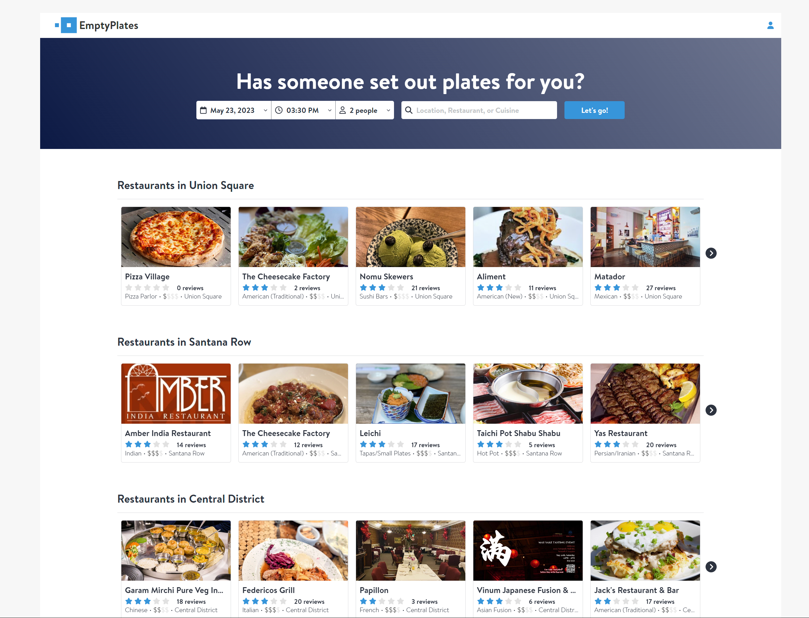
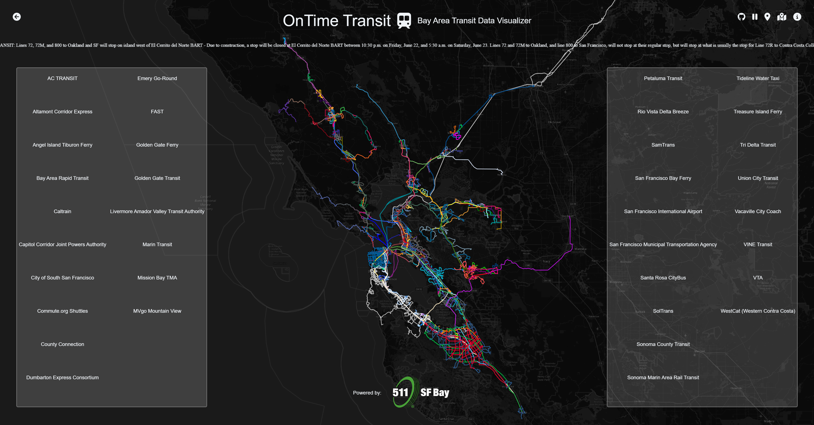

Intro
Typescript | JavaScript (ES6) | React.js | Ruby on Rails | MongoDB | SQL
Hi there! My name is Brian, and I'm a software developer looking to add to someone's company with my unique skillset.
I'm extremely passionate on the keyboard, both mechanical and musical, and I'd love to get to work with projects that showcase my talent.
By the way, check out my awesome work.
Work
EmptyPlates

Try it here!
EmptyPlates, an OpenTable clone, is a restaurant reservation application that allows patrons to search for and reserve a table at a restaurant that is on the platform, as well as leave reviews and ratings of their visit for other users to read.
Scene
 Try it here!
Try it here!
Scene is a social movie recommendation app using the TMDB API to recommend and help users discover new movies, create, view, and RSVP to local watch parties at movie theaters, and discuss and rate movies like a forum board.
OnTime Transit

Try it here!
OnTime Transit is a data visualization project to allow users to translate data provided by California's Metropolitan Transportation Commission (MTC) to a human-readable format in the browser using JavaScript and third-party libraries.
About

When I was 10, I started learning Javascript due to the suggestion and investment by my middle school teacher Mr. Palla.
I continued to feed my passion by teaching myself new languages while balancing my part-time work at Starbucks as a barista.
I was then quickly promoted to shift supervisor due to my ability to manage my coworkers and work in a fast-paced environment.
After working in the food/service industry for over three years, I thought it was finally time for me to pursue my passion for software engineering full-time.
Now, I'm looking for a company who matches my diverse skillset while providing a work environment that is fast-paced and challenging for my abilities.
Contact